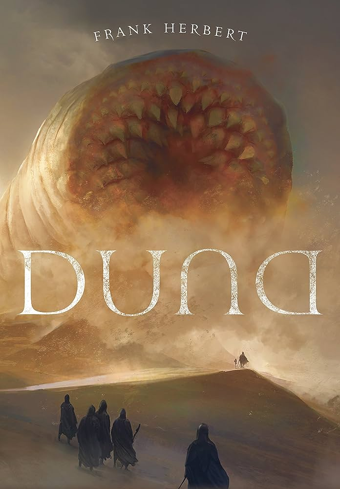

Autor(a): Markus Zusak
Ano de publicação: 2005 (Primeira edição)
Sinopse: "Filha de uma comunista perseguida pelo nazismo,
Liesel é adotada por um casal alemão em troca de dinheiro.
A menina logo se afeiçoa ao padrasto, Hans, que lhe ensina a ler e,
assim, dá o empurrão que faltava para que ela desenvolvesse o hábito de roubar livros ou lê-los furtivamente na biblioteca do prefeito da cidade."

Duna: Livro 1
Autor(a): Frank Herbert
Ano de publicação: 1965
Sinopse: "Envolvido numa intrincada teia política e religiosa,
Paul divide-se entre as obrigações de herdeiro e seu treinamento
nas doutrinas secretas de uma antiga irmandade,
que vê nele a esperança de realização de um plano urdido há séculos."
As Aventuras de Sherlock Holmes
Autor(a): Conan Doyle
Ano de publicação: 1892
Sinopse: "Sherlock Holmes é um detetive britânico enigmático e pedante do final do século XIX e início do século XX.
Ele utiliza a metodologia científica e a lógica dedutiva para solucionar
seus casos e conta com a ajuda de seu fiel amigo e parceiro dr. Watson."
Os dois morrem no final
Autor(a): Adam Silvera
Ano de publicação: 2017
Sinopse: "A notícia é devastadora: eles vão morrer naquele mesmo dia. Os dois não se conhecem, mas, por motivos diferentes, estão à procura de um amigo com quem compartilhar os últimos momentos, uma conexão verdadeira que ajude a diminuir um pouco a angústia e a solidão que sentem."
Predestinados
Autor(a): Amanda Orlando
Ano de publicação: 2023
Sinopse: "Entre o romance histórico e a narrativa de horror, Predestinados reúne o melhor desses dois mundos em uma trama eletrizante, tecida a partir de uma pergunta tão antiga quanto a humanidade: quais são os limites do poder?"